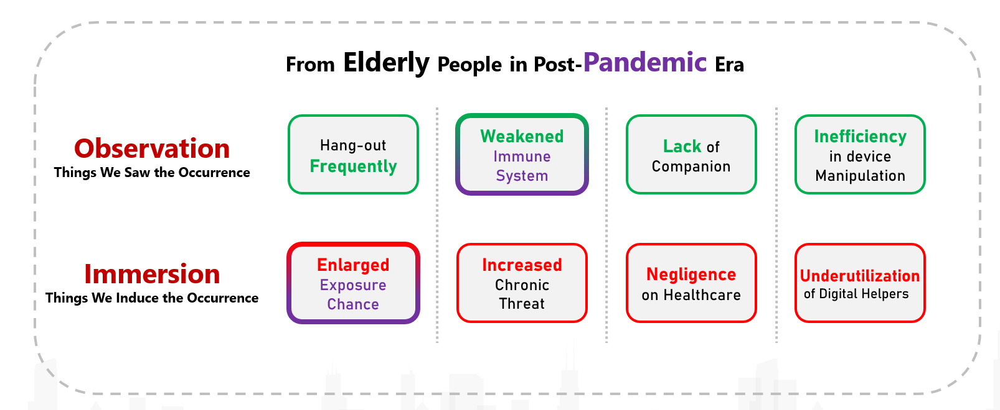
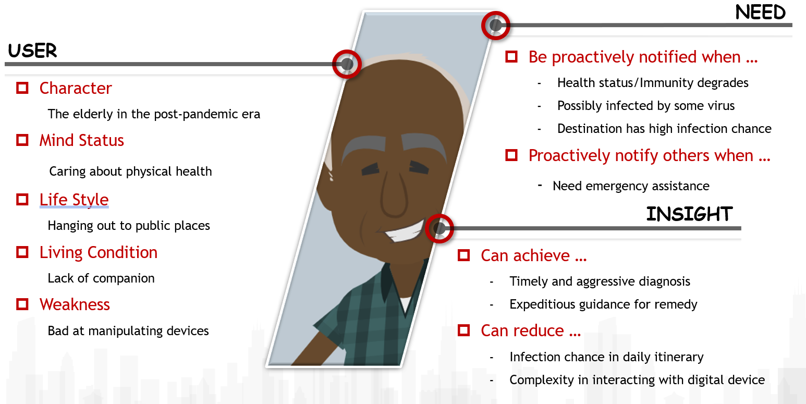
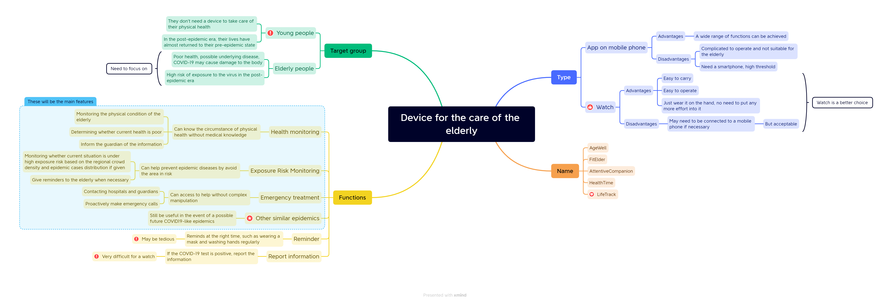
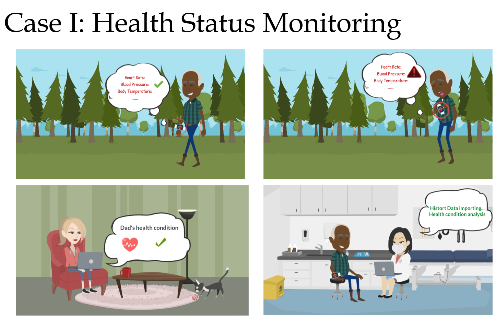
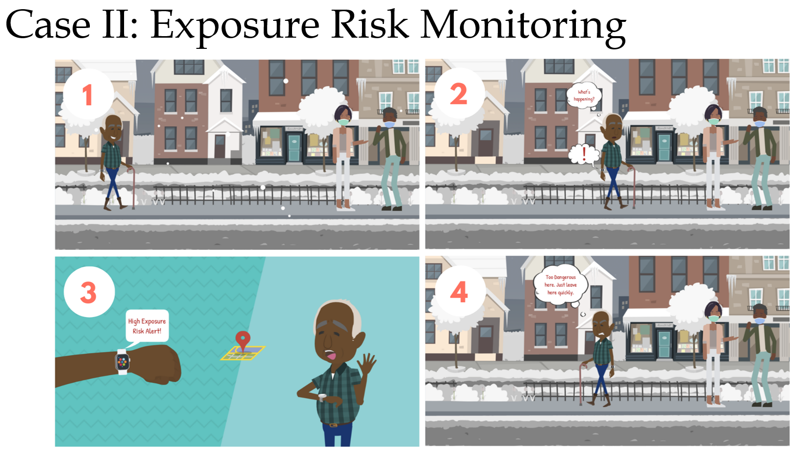
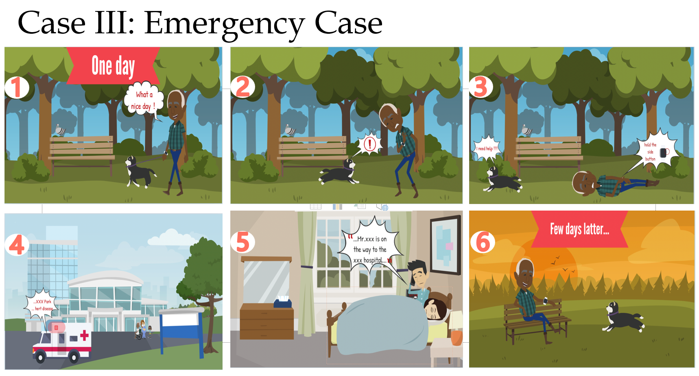
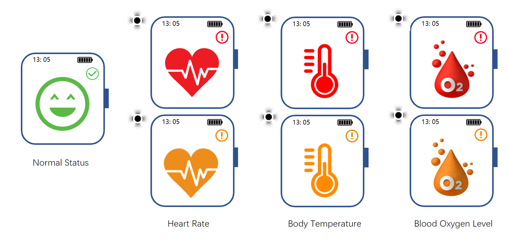
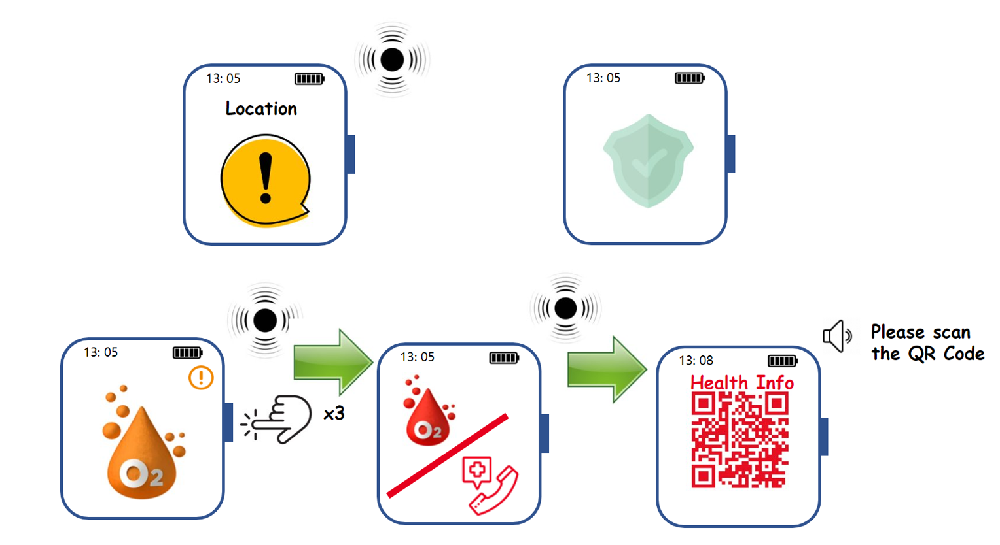
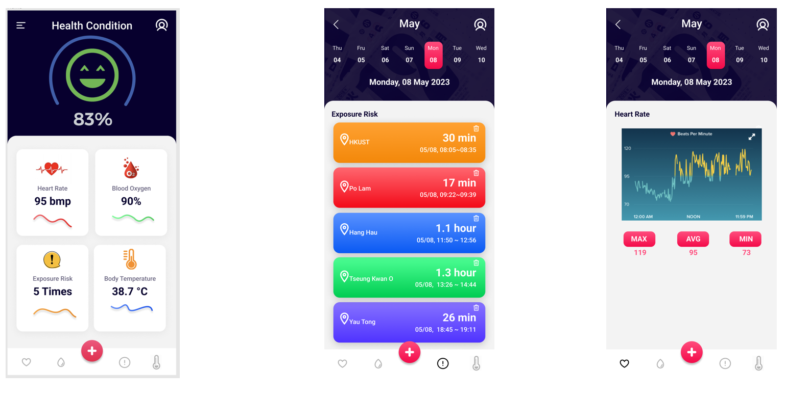

CSIT6000N
Project
Project Description
Our project focuses on the health of the elderly in the post-epidemic era, designing a watch for them that is easy to control.
The main functions include health status monitoring, making emergency call and exposure risk monitoring.
Throughout the process, our project went through various steps such as needfinding, ideation, design, implementation, and evaluation.
Finally, the design of all features and interactions was completed.
NeedFinding
The POV
MindMap
StoryBoard
  UI Design
  Video
My Contribution
In the first phase, I came up with a plan to design a product for the health of the elderly in the post-epidemic era, and worked with my teammates to complete the requirements survey and the general functional and interaction design.
In this phase, we got the results of the steps of needfinding, mindmap and broadly defined the product features and interactions.
In the second phase, my teammates and I worked together to design in detail the various functions of the watch and how it would interact with the users. Then I focused on the health status monitoring function and the design of each UI style and how the watch interacted with the user in different situations.
I was also involved in the filming and production of the video.
In addition, I have sorted out what the whole project process has inspired us and what we will see our watch for the future.
In this phase, we completed the detailed design of the watch's functions and interactions, obtained a video prototype, and completed an evaluation of all aspects of the watch.
Reflection
In the classroom, I learnt about HCI-related theory in a number of ways, including design, evaluation, prototyping, interaction, etc.
For example, as for design, we need to understand user needs and try to put ourselvse in their shoes, to see and think about what users want. Then systematically sort out these issues through POV and etc. And for evaluation, we can consider multiple usability heuristics such as consistency, mapping and freedom.
In the process of completing the project, I applied the theoretical knowledge of HCI-related design principles that I had learnt in class in practice. Our project systematically went through the steps of needfinding, ideation, design and evaluation, using HCI-related analysis and design principles to successfully design a smart watch for a specific user group in post-epidemic era.
I am very grateful to my teammates Cai, Ding, Jin and Shu, who were excellent and helped me a lot in completing the project.
Also, many thanks to professor and TAs for their efforts.
© JIANG Yunpeng's Website. All Rights Reserved. Designed by JIANG Yunpeng